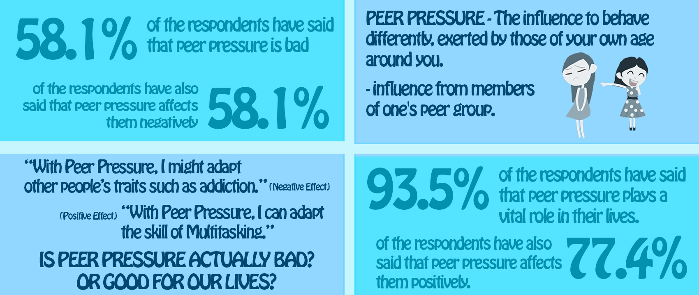

Making good mates is important, but sometimes trying to fit in with a group can turn sour.
Giving in to pressure from your friends to do something you normally wouldn't do can leave
you feeling guilty, regretful, ashamed, embarrassed or even frightened. Find out what peer
pressure is and how to handle it, including what to do if things get serious.
What is Peer Pressure?
Wanting to feel part of something can put pressure on you to act in certain ways.
If you’re doing something you wouldn’t normally do, or are not doing something you’d like
to do, simply so that you’ll be accepted by the people you hang out with, you’re suffering from peer pressure.
Peer pressure can influence:
The pressure to act in a certain way can be:
How to deal with peer pressure
Peer pressure isn’t always a bad thing; sometimes it can be good, such as when your friends stop you
from doing something dumb that you’ll later regret. But often peer pressure can be linked to negative stuff.
Check out the following examples of peer pressure and consider some tips for dealing with them.
Pressure to bully
Seeing friends bullying others in person or online (cyberbullying) can make you feel pressured to get involved.
It might seem okay at the time, but later you feel embarrassed, guilty or ashamed.
Pressure to diet or body-build
If your friends have strict diet or workout regimens, you might feel like you also need to achieve the ‘perfect’ body.
But worrying about your body image can leave you feeling burned out and stressed about how you look. Are you bored with
calculating the nutritional value of everything you eat? Are your workouts feeling lacklustre, because you’d rather be
doing something else? If you recognise yourself in these scenarios, maybe you’re dieting or working out just to fit in with your mates.
Pressure to diet or body-build
If you've felt pressured into drinking or taking drugs, you might feel guilt and regret afterwards for ‘giving in’.
Pressure to have sex
You might feel pressured to have sex if you’re afraid of what your partner or friends will think if you don’t and if
you want to fit in. But sex is intimate and very personal, and you may feel vulnerable afterwards.
If you've been pressured into having sex without expressing your consent, remember that sexual assault is
never okay and that there are support services available.
Pressure to have sex
You might feel pressured to have sex if you’re afraid of what your partner or friends will think if you don’t and if
you want to fit in. But sex is intimate and very personal, and you may feel vulnerable afterwards.
If you've been pressured into having sex without expressing your consent, remember that sexual assault is
never okay and that there are support services available.
Some ways to handle peer pressure
Pursue your own interests
Hang out with people who like doing the same stuff you do.
Say "no"
If you can calmly explain why something‘s not for you, you’ll gain respect.
Don't Judge
Respecting someone else’s choice may help them respect yours.
Friends don't have to agree with everything
Understanding that everyone has their own opinion means you can chill out and feel less defensive.
What to do if things get serious
If you’re in a situation where you feel threatened, are being hurt, or feel pressured into doing
something that you’re really uncomfortable with, you need to get help. Tell a family member, a friend
from outside the situation, a teacher or a counsellor.